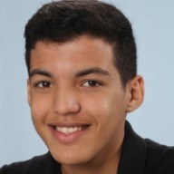
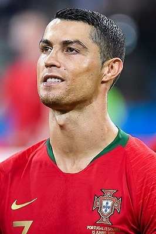

Biografie van Ridouane Ouacha
Dit is hoofdstuk 1
Hallo, ik ben Ridouane Ouacha. Ik ben 15 jaar en ik zit op het PCC Lyceum. Mijn hobby is voetballen. Ik ben geboren op 21 maart 2004 in Alkmaar. Toen ik vier jaar oud was ging ik voor het eerst naar school naar de basisschool De Wegwijzer. Na de basisschool begon ik mijn middelbare school-avontuur op het PCC Fabritius. Na 2 jaar bikkelen voor een VWO-advies was het me gelukt. Toen ging ik naar het PCC Lyceum, waar ik nog steeds op school zit.

Dit ben ik!
Dit is hoofdstuk 2
Mijn cijfers in de eerste gingen heel goed. Dat komt omdat ik toen denk ik veel meer motivatie had om goeie cijfers te halen. Ook in de tweede ging het goed met mijn cijfers. Ik had altijd genoeg tijd gehad om mijn huiswerk te maken of om mijn toetsen te leren, ookal had ik toen een bijbaantje. In de derde ging het wat minder. Dat kwam omdat ik nog steeds een bijbaan had maar de stof in de lessen steeds moeilijker en meer werd. Toch zorgde ik aan het einde van het jaar ervoor dat ik over ging met een mooie cijferlijst. Nu ik in de vierde zit weet ik precies hoe ik mijn school en mijn bijbaan moet combineren om alsnog goede cijfers te halen.
Dit is hoofdstuk 3
Ik heb heel veel hobby's. Een van mijn hobby's is voetballen. Ook heb ik veel idolen in het voetbal. Een van hen in Cristiano Ronaldo (zie foto). Een andere hobby's van mij is gamen. Een hele bekende spel dat ik speel is GTA 5.

Dit is Cristiano Ronaldo